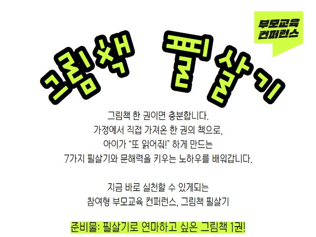
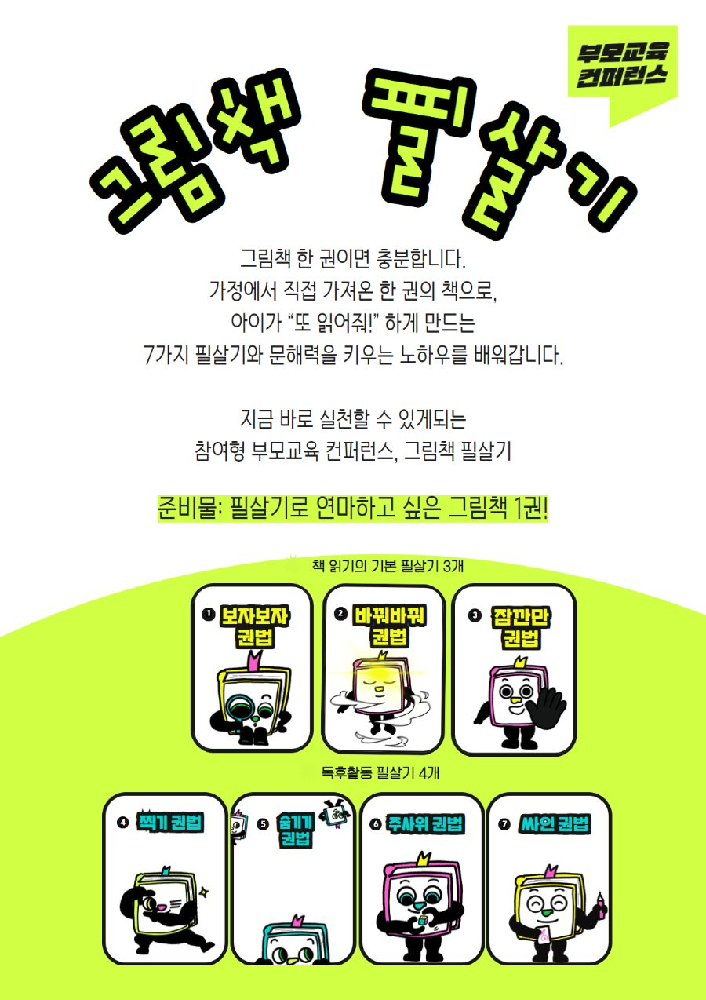

부모교육 컨퍼런스
그림책 필살기
그림책 한 권으로 아이가 “또 읽어줘!” 하게 만드는 7가지 필살기를 배우는 참여형 부모교육
자세히 보기
가정에서 직접 가져온 한 권의 책으로, 아이가 “또 읽어줘!” 하게 만드는 7가지 필살기와 문해력을 키우는 노하우를 배워 가는 참여형 부모교육 컨퍼런스입니다.
대상: 영유아 부모님 · 그림책 1권 준비

이런 점이 좋아요
- 그림책 1권만 있으면 바로 실천할 수 있어요
- 책 읽기 기본 필살기 3가지와 독후활동 필살기 4가지를 익혀요
- 집에서 이어갈 수 있는 문해력 노하우를 배워요
7가지 필살기
- 책 읽기의 기본 필살기 3가지 보자보자 권법 · 바꿔바꿔 권법 · 잠깐만 권법
- 독후활동 필살기 4가지 찍기 권법 · 숨기기 권법 · 주사위 권법 · 싸인 권법
- 준비물 필살기로 연마하고 싶은 그림책 1권